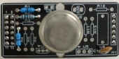

Evaluation Only. Created with Aspose.Words. Copyright 2003-2021 Aspose Pty Ltd.
微机原理课程设计实施方案
一、课程设计目的
通过课程设计，主要达到以下目的：
二、课程设计题目
烟雾感应器的系统设计
三、课程设计要求
(1)通过烟雾感应器模块接收外界的模拟信号，然后应用PIC的A/D采样口采集数据；
(2)将采集到的数据经过算法计算出烟雾的浓度数据，通过3位LED数码管显示；
(1)单片机采用PIC16F877A
(2)键盘为4×4行列式键盘，按键设有10个数字键0……9，2个功能键依次是：开启烟雾采集键、显示停止键；通过键盘能够输入0~9的数字，并从显示数码管的右边依次滚动进入。
(3)有3位LED管，采集处理后的数据依次从右边向左滚动进入，保留小数点后两位。
(1)键盘管理程序(包括键扫描、键处理程序)；
(2) LED动态显示程序；
(3) 10位二进制模拟数据的采集和数据处理。